| Live dashboard | https://agriclimate.streamlit.app/ |
| Repository | https://github.com/lovevyas/Agri_Climate_Data_Analysis_Platform |
| Cloud | AWS (ap-south-1), provisioned with Terraform |
| Stack | PySpark on AWS Glue · Lambda · S3 · RDS PostgreSQL · Streamlit |
Every number in this document was computed from the pipeline's own output, not estimated. The script that produced them is described in §9.
Three unrelated CSV sources are combined into one queryable star schema:
| Source | Rows | What it holds |
|---|---|---|
agriculture_crop_analysis.csv |
2,000 | Farm-level crop cycles: sowing, yield, cost, revenue |
imd_weather_station_data.csv |
2,000 | Official India Meteorological Department station readings |
noaa_climate_environmental_data.csv |
2,000 | Global NOAA climate and air-quality observations |
The hard part is that farms and weather stations have no shared key. They are joined geographically, with a temporal fallback — see §6.2.
The result is served two ways: Parquet files in S3 for analytical tools, and a PostgreSQL star schema for SQL queries and the dashboard.
| Requirement | Version | Why |
|---|---|---|
| Python | 3.9+ | 3.12 used in development |
| JDK | 11 or 17 | PySpark runs on the JVM |
| pip packages | see requirements.txt |
dashboard and analysis |
| PySpark | 3.5.1 | local ETL only — not in requirements.txt |
PySpark is deliberately excluded from requirements.txt: AWS Glue ships its own
Spark runtime, and including it would add ~300 MB to the Streamlit Cloud build for
no benefit.
python -m venv .venv
.venv\Scripts\activate # macOS/Linux: source .venv/bin/activate
pip install -r requirements.txt
pip install pyspark==3.5.1 # only if running the local pipeline
Verify the JVM is visible to Spark:
java -version
| Requirement | Notes |
|---|---|
| AWS account | Free tier covers db.t3.micro RDS for 12 months |
| AWS CLI | configured via aws configure |
| Terraform | 1.5+ |
| IAM permissions | create S3, IAM roles, RDS, Glue, Lambda |
Confirm credentials resolve before running Terraform:
aws sts get-caller-identity
streamlit>=1.30.0 # dashboard framework
pandas>=2.0.0 # dataframes
numpy>=1.24.0 # correlation matrix masking
matplotlib>=3.7.0 # figure rendering
seaborn>=0.12.0 # statistical charts
sqlalchemy>=2.0.0 # RDS connection for the live mode
psycopg2-binary>=2.9.0 # PostgreSQL driver
pyarrow>=14.0.0 # Parquet reader
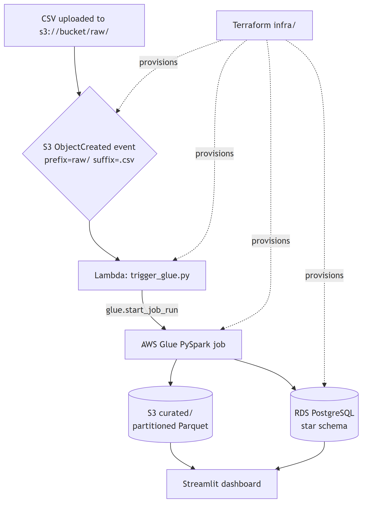
Design note. Provisioning is entirely declarative (Terraform). boto3 appears
in exactly one place — inside the Lambda — where calling an AWS API at runtime is
the actual requirement. Infrastructure is never created imperatively from a script.
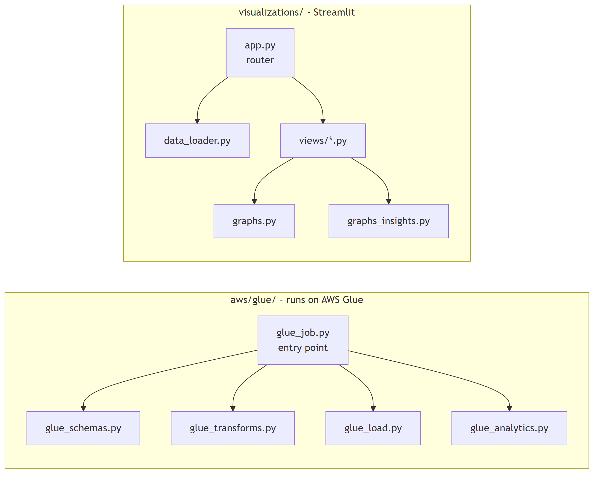
The entry point reads top-to-bottom as Extract → Transform → Load:
# aws/glue/glue_job.py
# Extract
raw = {
name: spark.read.csv(f"{raw_prefix}/{filename}", header=True, schema=schema())
for name, (filename, schema) in RAW_FILES.items()
}
# Transform
ag_clean = glue_transforms.clean_agriculture(raw["agriculture"])
imd_clean = glue_transforms.clean_imd(raw["imd"])
noaa_clean = glue_transforms.clean_noaa(raw["noaa"])
dim_farms, dim_weather_stations = glue_transforms.build_dimensions(ag_clean, imd_clean)
matched_farms = glue_transforms.match_farms_to_stations(ag_clean, imd_clean, dim_weather_stations)
tables = {
"dim_farms": dim_farms,
"dim_weather_stations": dim_weather_stations,
"fact_crop_yield": glue_transforms.build_fact_crop_yield(matched_farms),
"fact_weather_observations": glue_transforms.build_fact_weather_observations(imd_clean),
"fact_global_climate_environment": noaa_clean,
}
# Load
glue_load.write_curated_parquet(tables, curated_prefix)
url, props = glue_load.jdbc_settings(args)
glue_load.reset_tables(args)
glue_load.load_star_schema(tables, url, props)
summaries = glue_analytics.build_all(...)
glue_analytics.load_all(summaries, url, props)
Glue executes one entry-point script. Splitting it means the other four modules must be shipped separately, which Terraform handles by zipping them:
# infra/main.tf
locals {
glue_modules = ["glue_schemas.py", "glue_transforms.py", "glue_load.py", "glue_analytics.py"]
}
data "archive_file" "glue_modules" {
type = "zip"
output_path = "${path.module}/../aws/glue/glue_modules.zip"
dynamic "source" {
for_each = local.glue_modules
content {
content = file("${path.module}/../aws/glue/${source.value}")
filename = source.value
}
}
}
# infra/glue.tf — the zip is handed to Glue here
default_arguments = {
"--extra-py-files" = "s3://${aws_s3_bucket.data_lake.id}/${aws_s3_object.glue_modules.key}"
"--additional-python-modules" = "psycopg2-binary"
}
Maintenance warning. Adding a new module under
aws/glue/requires adding its filename tolocal.glue_modules. Forgetting this fails at runtime withModuleNotFoundError, not atterraform apply.
This project exposes no HTTP API — it is a batch data pipeline, so there are no REST routes. The equivalent integration points are the four contracts below.
Configured in infra/lambda.tf. Only .csv files under raw/ fire the trigger,
which prevents the job from re-triggering on its own Parquet output:
resource "aws_s3_bucket_notification" "csv_upload" {
bucket = aws_s3_bucket.data_lake.id
lambda_function {
lambda_function_arn = aws_lambda_function.trigger_glue.arn
events = ["s3:ObjectCreated:*"]
filter_prefix = "raw/"
filter_suffix = ".csv"
}
depends_on = [aws_lambda_permission.allow_s3]
}
# aws/lambda/trigger_glue.py
def lambda_handler(event, context):
record = event["Records"][0]
bucket = record["s3"]["bucket"]["name"]
key = record["s3"]["object"]["key"]
print(f"S3 event: s3://{bucket}/{key}")
try:
response = glue.start_job_run(
JobName=GLUE_JOB_NAME,
Arguments={
"--S3_BUCKET_NAME": S3_BUCKET_NAME,
"--RDS_HOST": RDS_HOST,
"--RDS_PORT": RDS_PORT,
"--RDS_DB": RDS_DB,
"--RDS_USER": RDS_USER,
"--RDS_PASSWORD": RDS_PASSWORD,
},
)
return {"statusCode": 200,
"body": json.dumps({"message": "Glue job started",
"job_run_id": response["JobRunId"]})}
except Exception as e:
return {"statusCode": 500, "body": json.dumps({"error": str(e)})}
Response contract
| Status | Body |
|---|---|
200 |
{"message", "file", "job_run_id"} |
500 |
{"error"} |
Seven arguments, all required. Missing any one aborts the run with GlueArgumentError:
| Argument | Source |
|---|---|
--JOB_NAME |
supplied by Glue |
--S3_BUCKET_NAME |
Terraform output bucket_name |
--RDS_HOST |
Terraform output db_endpoint (host portion) |
--RDS_PORT |
5432 |
--RDS_DB |
agri_climate |
--RDS_USER |
dbadmin |
--RDS_PASSWORD |
Terraform output db_password (sensitive) |
| Target | Location | Partitioned by |
|---|---|---|
dim_farms |
s3://bucket/curated/dim_farms |
— |
dim_weather_stations |
s3://bucket/curated/dim_weather_stations |
— |
fact_crop_yield |
s3://bucket/curated/fact_crop_yield |
season |
fact_weather_observations |
s3://bucket/curated/fact_weather_observations |
season |
fact_global_climate_environment |
s3://bucket/curated/… |
country |
All eight tables are additionally written to RDS over JDBC.
The dashboard's "routes" are a sidebar radio mapped to view modules:
# visualizations/app.py
PAGES = {
"Platform Overview": overview,
"Use Case 1: Yield & Weather": usecase1_yield_weather,
"Use Case 2: Climate Risk": usecase2_climate_risk,
"Use Case 3: NOAA Environment": usecase3_noaa_environment,
"Hidden Insights": hidden_insights,
}
PAGES[page].render(dfs)
The directory is named
views/, notpages/. Streamlit treats apages/folder beside the entry point as automatic multi-page navigation, which would have conflicted with this manual router.
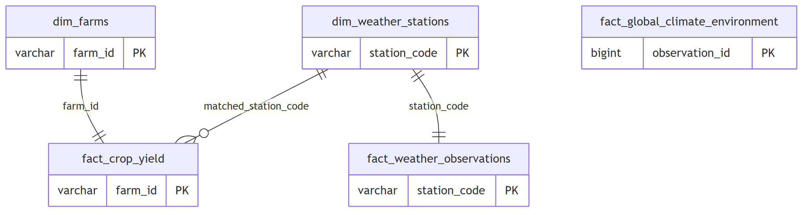
| Table | Rows | Columns |
|---|---|---|
dim_farms |
2,000 | 10 |
dim_weather_stations |
2,000 | 4 |
fact_crop_yield |
2,000 | 25 |
fact_weather_observations |
2,000 | 21 |
fact_global_climate_environment |
2,000 | 31 |
analytics.yield_weather_correlation |
rollup | 6 |
analytics.climate_risk_farms |
rollup | 7 |
analytics.global_environment_summary |
rollup | 7 |
Farms and stations share no key. Two strategies, in order:
# aws/glue/glue_transforms.py
def match_farms_to_stations(ag_clean, imd_clean, dim_weather_stations):
keep_cols = ag_clean.columns + ["matched_station_code", "match_type"]
exact_raw = (
ag_clean.join(dim_weather_stations, on=["state", "district"], how="inner")
.withColumn("matched_station_code", col("station_code"))
.withColumn("match_type", lit("Exact District Match"))
)
# A district can hold several stations, which would fan one farm out into
# several rows and collide with fact_crop_yield's farm_id primary key.
exact_matches = (
exact_raw
.withColumn("_rn", row_number().over(Window.partitionBy("farm_id").orderBy("station_code")))
.filter(col("_rn") == 1)
.select(*keep_cols)
)
unmatched = ag_clean.join(dim_weather_stations, on=["state", "district"], how="left_anti")
# Project to just the join keys: carrying all of imd_clean here would
# duplicate column names (season, rainfall_mm...) and make later
# references ambiguous.
station_readings = imd_clean.select("station_code", "state", "observation_date")
fallback = (
unmatched.join(station_readings, on="state", how="inner")
.withColumn("date_diff", spark_abs(datediff(col("sowing_date"), col("observation_date"))))
.withColumn("_rn", row_number().over(
Window.partitionBy("farm_id").orderBy("date_diff", "station_code")
))
.filter(col("_rn") == 1)
.withColumn("matched_station_code", col("station_code"))
.withColumn("match_type", lit("Nearest In State"))
.select(*keep_cols)
)
return exact_matches.unionByName(fallback)
Result
| Match type | Farms | Share |
|---|---|---|
| Exact District Match | 1,739 | 87.0% |
| Nearest In State | 261 | 13.0% |
| Total | 2,000 | 100% |
182 distinct stations are actually used out of 2,000 available.
Spark's mode="overwrite" issues DROP TABLE. That fails against foreign keys and
would replace the DDL's DECIMAL types with Spark's inferred ones. Instead:
# aws/glue/glue_load.py
RESET_SQL = """
TRUNCATE TABLE
fact_crop_yield, fact_weather_observations, fact_global_climate_environment,
dim_farms, dim_weather_stations,
analytics.yield_weather_correlation, analytics.climate_risk_farms,
analytics.global_environment_summary
RESTART IDENTITY CASCADE;
"""
def load_star_schema(tables, url, props):
"""Load dimensions before facts so the foreign keys resolve."""
print("Loading Dimension Tables to RDS...")
for name in ("dim_farms", "dim_weather_stations"):
tables[name].write.jdbc(url=url, table=name, mode="append", properties=props)
print("Loading Fact Tables to RDS...")
for name in ("fact_crop_yield", "fact_weather_observations", "fact_global_climate_environment"):
tables[name].write.jdbc(url=url, table=name, mode="append", properties=props)
Postgres only permits truncating an FK-referenced table if its dependents are truncated in the same statement — hence one command for all eight tables.
The source data is synthetic. Some specified charts plot variables that are statistically independent, and the documentation says so rather than inventing a narrative. Each such chart is paired with a companion chart built on a relationship that does hold.
Question. Does the weather recorded at official stations explain farm profitability?
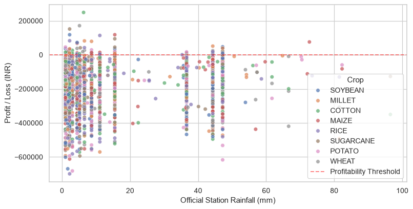
Flat cloud, no left-to-right slope, nearly all of it below break-even. r = +0.048 — station rainfall does not separate profitable farms from unprofitable ones.
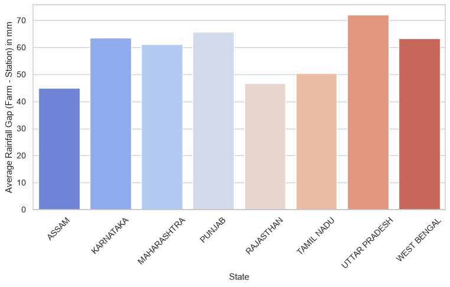
The measurable disagreement between farmer-reported and official rainfall. This is the genuinely useful output of the join: it quantifies data-quality drift, which matters for insurance claims assessed on self-reported weather.
# visualizations/views/usecase1_yield_weather.py
PROFIT_DRIVERS = {
"Official Station Rainfall (mm)": "rainfall_mm",
"Production Cost (INR)": "production_cost_inr",
"Land Area (acres)": "land_area_acres",
}
def _render_profit_explorer(merged):
st.write("#### 3. Profit Driver Explorer (interactive)")
all_crops = sorted(merged["crop"].unique())
col_a, col_b = st.columns([1, 1])
with col_a:
crops = st.multiselect("Crops to compare", all_crops, default=all_crops[:4])
with col_b:
driver = st.radio("Compare profit against", list(PROFIT_DRIVERS), index=0)
fig = graphs_insights.plot_profit_trend(merged, PROFIT_DRIVERS[driver], driver, crops)
st.pyplot(fig)
The chart binds x-axis to a selector so the user discovers the answer by comparison:
| Selector = Rainfall | Selector = Production Cost |
|---|---|
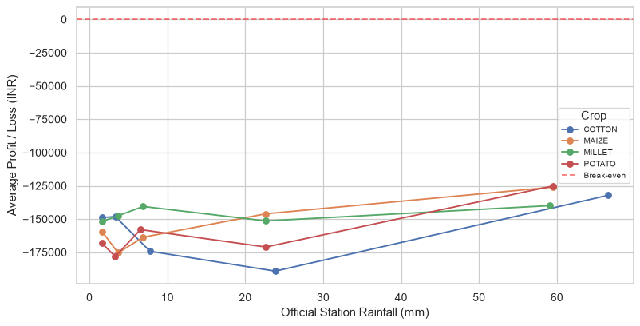 |
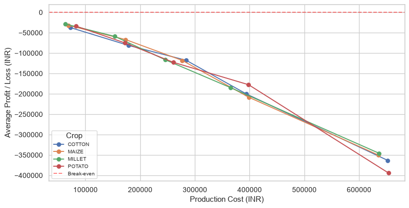 |
| Tangled, flat — no signal | Clean monotonic decline — strong signal |
Quantile bins are used rather than equal-width so each point rests on a similar number of farms:
# visualizations/graphs_insights.py
def plot_profit_trend(merged_df, x_col, x_label, crops):
"""Mean profit across quantile bins of x_col, one line per selected crop."""
fig, ax = plt.subplots(figsize=(10, 5))
for crop in crops:
sub = merged_df[merged_df["crop"] == crop]
if sub.empty:
continue
# Quantile bins keep each point backed by a similar number of farms,
# so a line never swings wildly on the strength of one outlier.
binned = pd.qcut(sub[x_col], q=5, duplicates="drop")
summary = sub.groupby(binned, observed=True)["profit_loss_inr"].mean()
ax.plot([b.mid for b in summary.index], summary.values, marker="o", label=crop)
ax.axhline(0, color="red", linestyle="--", alpha=0.5, label="Break-even")
return fig
Finding. profit_loss_inr equals market_price_inr − production_cost_inr
exactly (max residual 1.16e-10). Production cost correlates with profit at
r = −0.887; station rainfall at r = +0.048. Cost runs roughly twice revenue
throughout, which is why 95.4% of farms show a loss and the median margin is −114%.
Profitability here is a cost-structure story, not a climate one.
Question. Do official weather alerts predict crop damage?
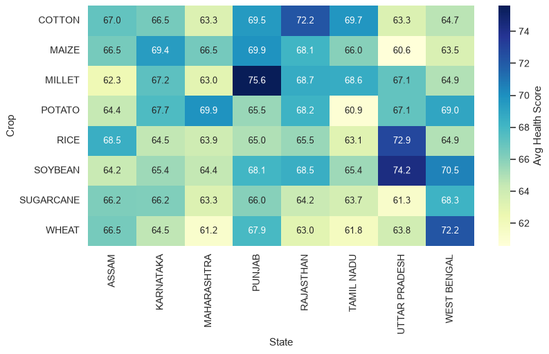
Scores cluster in the 60s–70s; no state-crop pairing stands out dramatically.
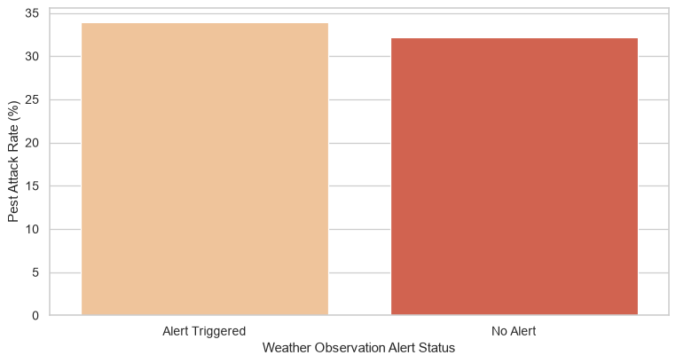
33.9% vs 32.2% — a 1.7-point difference. Flood and cyclone alerts do not predict pest attacks. Weather alerts are not a usable early-warning signal here.
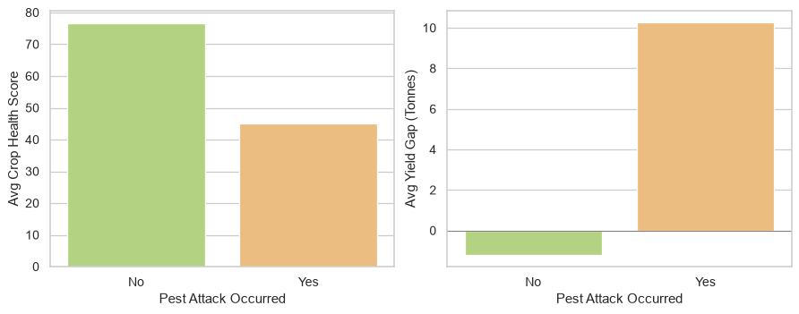
# visualizations/views/usecase2_climate_risk.py
pest_summary = (
yield_df.groupby("pest_attack")[["crop_health_score", "yield_gap_tonnes"]].mean().reset_index()
)
fig = graphs_insights.plot_pest_impact(pest_summary)
st.pyplot(fig)
| Metric | No pest | Pest attack | Change |
|---|---|---|---|
| Crop health score | 76.66 | 45.10 | −31.6 points |
| Yield gap (tonnes) | −1.21 | +10.26 | 11.5 t swing |
| Actual yield (tonnes) | 50.63 | 41.05 | −19% |
Finding. Pests are the single largest driver of lost yield (crop_health_score
vs yield_gap_tonnes, r = −0.616) — but weather alerts give no warning of them.
Resource pre-positioning should therefore be driven by pest surveillance, not
meteorological alerts.
Question. What drives air quality and disaster risk?
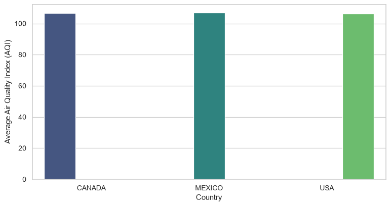
Canada 106.7 · Mexico 107.0 · USA 106.2 — within one point. Country carries no information about air quality in this dataset.
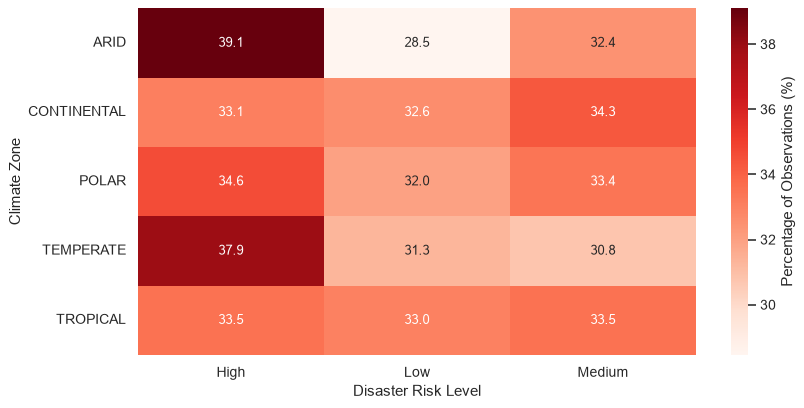
Every cell near 33%. Climate zone carries no information about disaster risk.
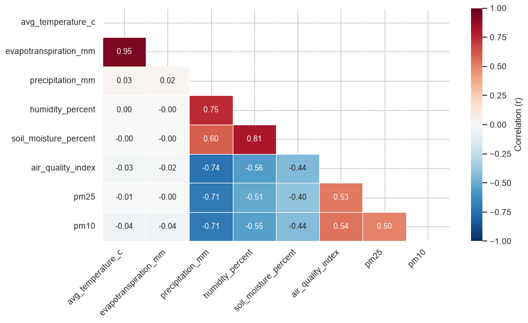
# visualizations/graphs_insights.py
def plot_env_correlation_heatmap(noaa_df):
"""Correlation matrix of the NOAA environmental measures."""
cols = [
"avg_temperature_c", "evapotranspiration_mm", "precipitation_mm",
"humidity_percent", "soil_moisture_percent", "air_quality_index", "pm25", "pm10",
]
corr = noaa_df[cols].corr()
fig, ax = plt.subplots(figsize=(10, 6))
sns.heatmap(
corr,
mask=np.triu(np.ones_like(corr, dtype=bool)), # upper half mirrors the lower, so hide it
annot=True, fmt=".2f", cmap="RdBu_r", center=0, vmin=-1, vmax=1,
linewidths=0.5, cbar_kws={"label": "Correlation (r)"}, ax=ax,
)
return fig
Same chart type as 3.2, real structure. Two clusters emerge: a thermal one (temperature → evapotranspiration, +0.945) and a hydrological one (precipitation → humidity → soil moisture, and precipitation → AQI at −0.741).
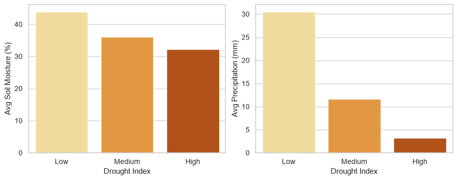
| Drought index | Soil moisture | Precipitation |
|---|---|---|
| Low | 43.93% | 30.54 mm |
| Medium | 36.03% | 11.65 mm |
| High | 32.29% | 3.26 mm |
Finding. Unlike climate zone, the drought index is a genuine summary of local water availability — both measures fall monotonically as severity rises.
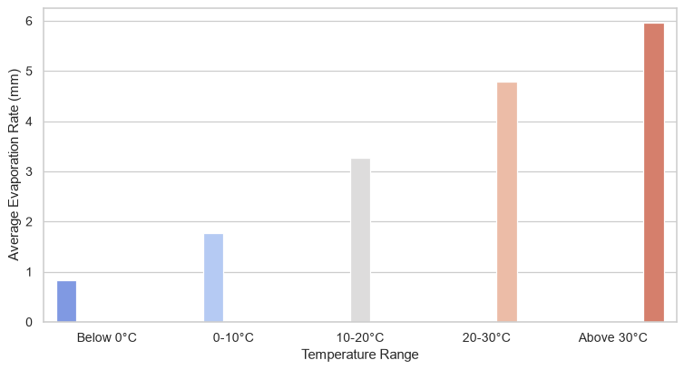
0.8 mm below 0 °C rising to 6.0 mm above 30 °C — roughly sevenfold (r = +0.945). A direct visual for water stress: higher temperatures mean faster soil drying.
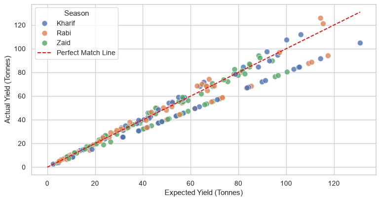
r = +0.972. Farms forecast well; points below the red line are the shortfalls, averaging about 5% of expected yield.
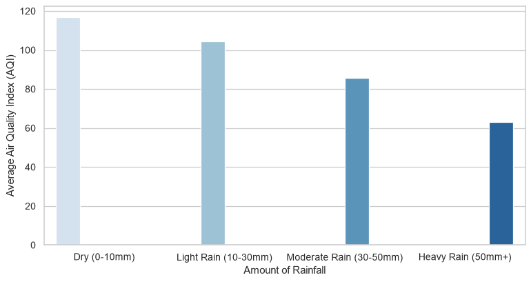
r = −0.741. Rain scrubs particulates from the air. This is the effect the flat AQI-by-country chart was missing.
python pyspark/run_pipeline.py # raw CSVs -> datasets/curated/ Parquet
python testing/verify_tests.py # writes testing/test_results_log.csv
streamlit run visualizations/app.py
cd infra
terraform init
terraform apply
Create the tables once (reads DB_HOST and DB_PASSWORD from the environment):
python apply_schema.py
From here the pipeline is event-driven:
aws s3 cp ../datasets/raw/agriculture_crop_analysis.csv s3://<bucket>/raw/
To start a run directly instead:
.\test_glue_args.ps1
PowerShell note.
ConvertTo-Json | Set-Content -Encoding utf8writes a UTF-8 BOM in PowerShell 5.1, which the AWS CLI rejects when readingfile://. The helper script uses[System.IO.File]::WriteAllTextwithUTF8Encoding($false)instead.
Hosted on Streamlit Community Cloud from visualizations/app.py, reading the
committed Parquet files. The live-RDS option is intentionally unused there —
connecting would require typing a database password into a public page.
The pipeline was validated at four levels:
| Level | Check | Result |
|---|---|---|
| Schema | Fact column lists vs create_tables.sql |
25 and 21 columns, exact match |
| Referential | matched_station_code values absent from dim_weather_stations |
0 orphans |
| Key integrity | Duplicate PKs in each fact table | none |
| Runtime | Glue job end-to-end on AWS | succeeded |
| Dashboard | All 5 pages, 13 charts | 0 exceptions |
| Dependencies | Every import present in requirements.txt |
all covered |
| Symptom | Root cause | Fix |
|---|---|---|
Reference 'season' is ambiguous |
Fallback join carried all of imd_clean, duplicating column names |
Project to the three join keys only |
cannot drop table dim_farms |
Spark mode="overwrite" issues DROP TABLE, blocked by FKs |
TRUNCATE … CASCADE + mode="append" |
Column "state" not found |
Facts carried dimension columns; append validates against the real table |
Explicit .select() to the DDL columns |
duplicate key … fact_crop_yield_pkey |
A district holds several stations, fanning one farm into several rows | Window dedup to one station per farm |
| Overview showed 2,000 "stations matched" | Metric counted the dimension, not actual matches | Count matched_station_code distinct → 182 |
| 5 charts would break on seaborn 0.14 | palette= without hue= is deprecated |
Added hue= + legend=False |
The mode="overwrite" bug is worth dwelling on: it was silently masking the
schema error. Overwrite recreated each table to match whatever the DataFrame held,
so the extra dimension columns never raised anything — they just quietly corrupted
the star schema. Switching to append made Spark validate against the real table
and surface the mismatch.
| Service | Billing | Notes |
|---|---|---|
RDS db.t3.micro |
hourly | free tier 12 months; the only continuous cost |
| S3 | per GB | ~2 MB stored — negligible |
| Glue | per DPU-hour | 2 × G.1X, a few minutes per run |
| Lambda | per invocation | free tier covers it |
RDS is the only meaningful cost. When finished:
cd infra
terraform destroy
The RDS instance is deliberately publicly_accessible = true with ingress from
0.0.0.0/0, so the dashboard can reach it from a laptop without a bastion host or
VPN. It is protected only by a generated 20-character password.
This is a demo convenience, not a pattern to copy. Production would place RDS in a private subnet and reach it through a bastion, a VPN, or a VPC-attached Lambda. The Terraform state holding that password is excluded from version control.